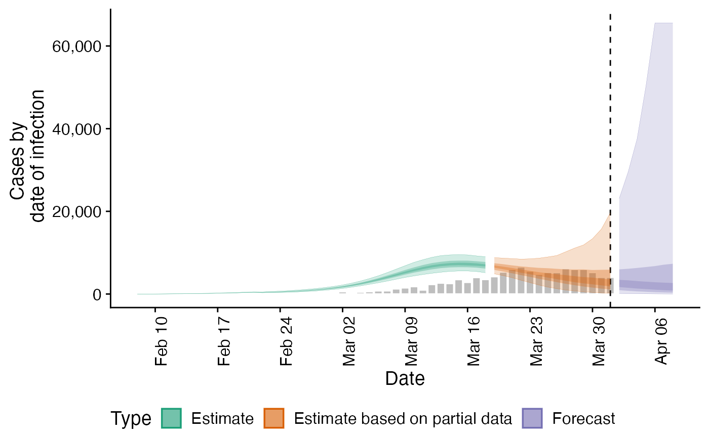
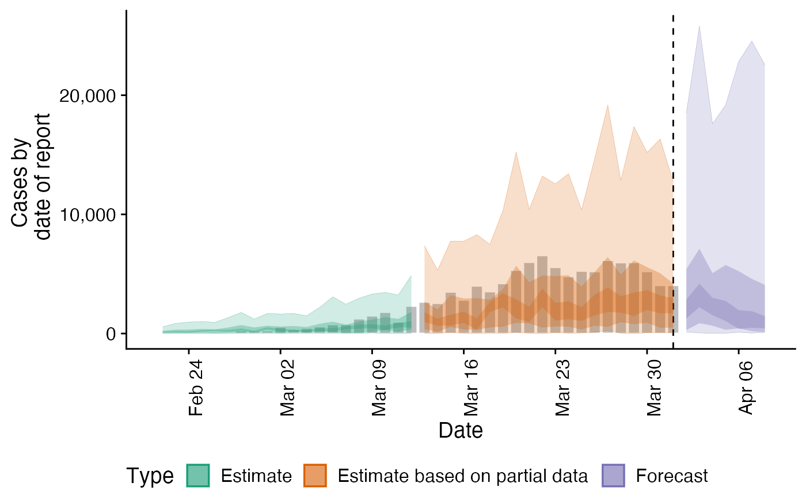
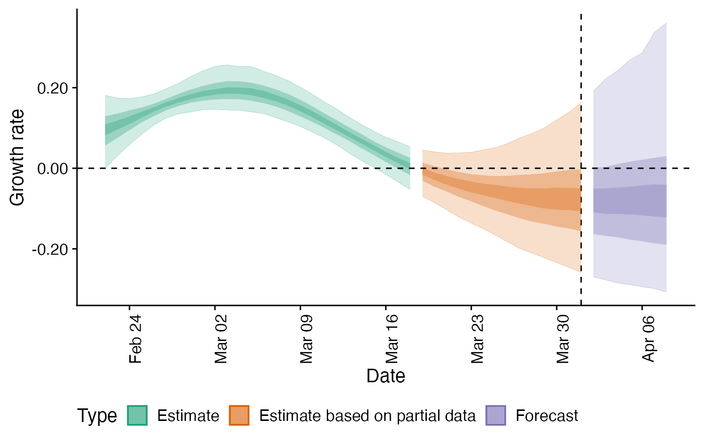
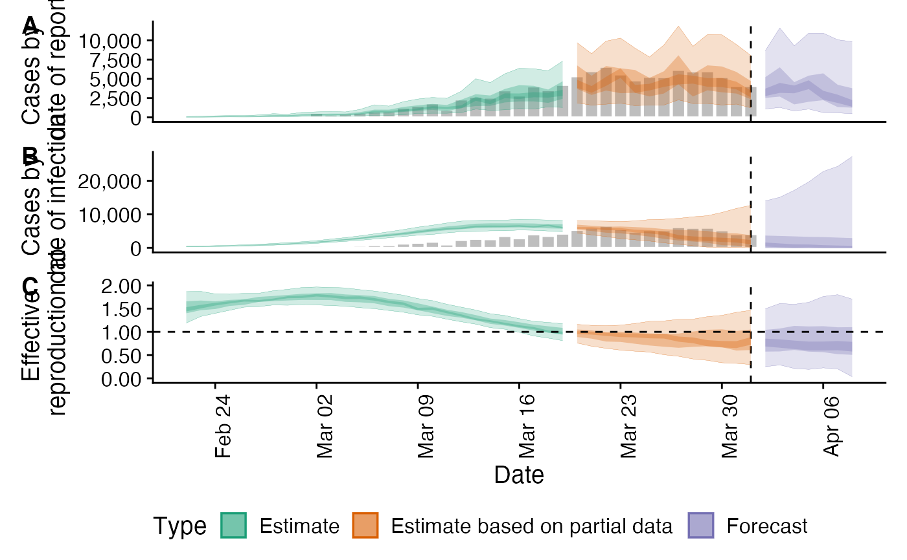

epinow.RdEstimate Rt and cases by date of infection, forecast into the future, transform to date of report and then save summary measures and plots.
epinow( reported_cases, family = "negbin", generation_time, delays, gp = list(basis_prop = 0.3, boundary_scale = 2, lengthscale_mean = 0, lengthscale_sd = 2), rt_prior = list(mean = 1, sd = 1), model, prior_smoothing_window = 7, cores = 1, chains = 4, samples = 1000, warmup = 200, adapt_delta = 0.99, max_treedepth = 15, estimate_rt = TRUE, estimate_week_eff = TRUE, estimate_breakpoints = FALSE, burn_in = 0, stationary = FALSE, fixed = FALSE, return_fit = FALSE, forecast_model, horizon = 7, ensemble_type = "mean", return_estimates = TRUE, target_folder, target_date, verbose = TRUE, debug = FALSE )
| reported_cases | A data frame of confirmed cases (confirm) by date (date). confirm must be integer and date must be in date format. |
|---|---|
| family | A character string indicating the reporting model to use. Defaults to negative binomial ("negbin") with poisson ("poisson") also supported. |
| generation_time | A list containing the mean, standard deviation of the mean (mean_sd), standard deviation (sd), standard deviation of the standard deviation and the maximum allowed value for the generation time (assuming a gamma distribution). |
| delays | A list of delays (i.e incubation period/reporting delay) between infection and report. Each list entry must also be a list containing the mean, standard deviation of the mean (mean_sd), standard deviation (sd), standard deviation of the standard deviation and the maximum allowed value for the that delay (assuming a lognormal distribution with all parameters excepting the max allowed value on the log scale). |
| gp | List controlling the Gaussian process approximation. Must contain
the |
| rt_prior | A list contain the mean and standard deviation (sd) of the gamma distributed prior for Rt. By default this is assumed to be mean 1 with a standard deviation of 1. |
| model | A compiled stan model. By default uses the internal package model. |
| prior_smoothing_window | Numeric defaults to 7. The number of days over which to take a rolling average for the prior based on reported cases. |
| cores | Numeric, defaults to 2. The number of cores to use when fitting the stan model. |
| chains | Numeric, defaults to 2. The number of MCMC chains to use. |
| samples | Numeric, defaults to 1000. Number of samples post warmup. |
| warmup | Numeric, defaults to 200. Number of iteration of warmup to use. |
| adapt_delta | Numeric, defaults to 0.99. See ?rstan::sampling. |
| max_treedepth | Numeric, defaults to 15. See ?rstan::sampling. |
| estimate_rt | Logical, defaults TRUE. Should Rt be estimated when imputing infections. |
| estimate_week_eff | Logical, defaults TRUE. Should weekly reporting effects be estimated. |
| estimate_breakpoints | Logical, defaults to FALSE. Should breakpoints in Rt be estimated. If true then |
| burn_in | Numeric, defaults to 0. The number of initial estimates to discard. This argument may be used to reduce
spurious findings when running |
| stationary | Logical, defaults to FALSE. Should Rt be estimated with a global mean. When estimating Rt this should substantially improve run times but will revert to the global average for real time and forecasted estimates. This setting is most appropriate when estimating historic Rt or when combined with breakpoints. |
| fixed | Logical, defaults to FALSE. If TRUE then a Gaussian process is not used and Rt is assumed to be constant over time
(apart from any manually included breakpoints). If |
| return_fit | Logical, defaults to FALSE. Should the fitted stan model be returned. |
| forecast_model | An uninitialised forecast model function to be passed to |
| horizon | Numeric, defaults to 7. Number of days into the future to forecast. |
| ensemble_type | Character string indicating the type of ensemble to use. By default this is an unweighted ensemble ("mean") with no other types currently supported. |
| return_estimates | Logical, defaults to TRUE. Should estimates be returned. |
| target_folder | Character string specifying where to save results (will create if not present). |
| target_date | Date, defaults to maximum found in the data if not specified. |
| verbose | Logical, defaults to |
| debug | Logical, defaults to |
A list of output from estimate_infections, forecast_infections, report_cases, and report_summary.
# \donttest{ ## Construct example distributions generation_time <- list(mean = EpiNow2::covid_generation_times[1, ]$mean, mean_sd = EpiNow2::covid_generation_times[1, ]$mean_sd, sd = EpiNow2::covid_generation_times[1, ]$sd, sd_sd = EpiNow2::covid_generation_times[1, ]$sd_sd, max = 30) incubation_period <- list(mean = EpiNow2::covid_incubation_period[1, ]$mean, mean_sd = EpiNow2::covid_incubation_period[1, ]$mean_sd, sd = EpiNow2::covid_incubation_period[1, ]$sd, sd_sd = EpiNow2::covid_incubation_period[1, ]$sd_sd, max = 30) reporting_delay <- EpiNow2::bootstrapped_dist_fit(rlnorm(100, log(6), 1)) ## Set max allowed delay to 60 days to truncate computation reporting_delay$max <- 60 ## Example case data reported_cases <- EpiNow2::example_confirmed[1:40] ## Report Rt along with forecasts out <- epinow(reported_cases = reported_cases, generation_time = generation_time, delays = list(incubation_period, reporting_delay), rt_prior = list(mean = 1, sd = 1), samples = 1000, warmup = 200, cores = ifelse(interactive(), 4, 1), chains = 4, verbose = TRUE, return_fit = TRUE)#>#> #> SAMPLING FOR MODEL 'estimate_infections' NOW (CHAIN 1). #> Chain 1: #> Chain 1: Gradient evaluation took 0.000391 seconds #> Chain 1: 1000 transitions using 10 leapfrog steps per transition would take 3.91 seconds. #> Chain 1: Adjust your expectations accordingly! #> Chain 1: #> Chain 1: #> Chain 1: Iteration: 1 / 450 [ 0%] (Warmup) #> Chain 1: Iteration: 50 / 450 [ 11%] (Warmup) #> Chain 1: Iteration: 100 / 450 [ 22%] (Warmup) #> Chain 1: Iteration: 150 / 450 [ 33%] (Warmup) #> Chain 1: Iteration: 200 / 450 [ 44%] (Warmup) #> Chain 1: Iteration: 201 / 450 [ 44%] (Sampling) #> Chain 1: Iteration: 250 / 450 [ 55%] (Sampling) #> Chain 1: Iteration: 300 / 450 [ 66%] (Sampling) #> Chain 1: Iteration: 350 / 450 [ 77%] (Sampling) #> Chain 1: Iteration: 400 / 450 [ 88%] (Sampling) #> Chain 1: Iteration: 450 / 450 [100%] (Sampling) #> Chain 1: #> Chain 1: Elapsed Time: 55.0534 seconds (Warm-up) #> Chain 1: 35.7659 seconds (Sampling) #> Chain 1: 90.8193 seconds (Total) #> Chain 1: #> #> SAMPLING FOR MODEL 'estimate_infections' NOW (CHAIN 2). #> Chain 2: #> Chain 2: Gradient evaluation took 0.000331 seconds #> Chain 2: 1000 transitions using 10 leapfrog steps per transition would take 3.31 seconds. #> Chain 2: Adjust your expectations accordingly! #> Chain 2: #> Chain 2: #> Chain 2: Iteration: 1 / 450 [ 0%] (Warmup) #> Chain 2: Iteration: 50 / 450 [ 11%] (Warmup) #> Chain 2: Iteration: 100 / 450 [ 22%] (Warmup) #> Chain 2: Iteration: 150 / 450 [ 33%] (Warmup) #> Chain 2: Iteration: 200 / 450 [ 44%] (Warmup) #> Chain 2: Iteration: 201 / 450 [ 44%] (Sampling) #> Chain 2: Iteration: 250 / 450 [ 55%] (Sampling) #> Chain 2: Iteration: 300 / 450 [ 66%] (Sampling) #> Chain 2: Iteration: 350 / 450 [ 77%] (Sampling) #> Chain 2: Iteration: 400 / 450 [ 88%] (Sampling) #> Chain 2: Iteration: 450 / 450 [100%] (Sampling) #> Chain 2: #> Chain 2: Elapsed Time: 111.322 seconds (Warm-up) #> Chain 2: 78.1327 seconds (Sampling) #> Chain 2: 189.455 seconds (Total) #> Chain 2: #> #> SAMPLING FOR MODEL 'estimate_infections' NOW (CHAIN 3). #> Chain 3: #> Chain 3: Gradient evaluation took 0.000995 seconds #> Chain 3: 1000 transitions using 10 leapfrog steps per transition would take 9.95 seconds. #> Chain 3: Adjust your expectations accordingly! #> Chain 3: #> Chain 3: #> Chain 3: Iteration: 1 / 450 [ 0%] (Warmup) #> Chain 3: Iteration: 50 / 450 [ 11%] (Warmup) #> Chain 3: Iteration: 100 / 450 [ 22%] (Warmup) #> Chain 3: Iteration: 150 / 450 [ 33%] (Warmup) #> Chain 3: Iteration: 200 / 450 [ 44%] (Warmup) #> Chain 3: Iteration: 201 / 450 [ 44%] (Sampling) #> Chain 3: Iteration: 250 / 450 [ 55%] (Sampling) #> Chain 3: Iteration: 300 / 450 [ 66%] (Sampling) #> Chain 3: Iteration: 350 / 450 [ 77%] (Sampling) #> Chain 3: Iteration: 400 / 450 [ 88%] (Sampling) #> Chain 3: Iteration: 450 / 450 [100%] (Sampling) #> Chain 3: #> Chain 3: Elapsed Time: 53.8273 seconds (Warm-up) #> Chain 3: 36.5032 seconds (Sampling) #> Chain 3: 90.3305 seconds (Total) #> Chain 3: #> #> SAMPLING FOR MODEL 'estimate_infections' NOW (CHAIN 4). #> Chain 4: #> Chain 4: Gradient evaluation took 0.000305 seconds #> Chain 4: 1000 transitions using 10 leapfrog steps per transition would take 3.05 seconds. #> Chain 4: Adjust your expectations accordingly! #> Chain 4: #> Chain 4: #> Chain 4: Iteration: 1 / 450 [ 0%] (Warmup) #> Chain 4: Iteration: 50 / 450 [ 11%] (Warmup) #> Chain 4: Iteration: 100 / 450 [ 22%] (Warmup) #> Chain 4: Iteration: 150 / 450 [ 33%] (Warmup) #> Chain 4: Iteration: 200 / 450 [ 44%] (Warmup) #> Chain 4: Iteration: 201 / 450 [ 44%] (Sampling) #> Chain 4: Iteration: 250 / 450 [ 55%] (Sampling) #> Chain 4: Iteration: 300 / 450 [ 66%] (Sampling) #> Chain 4: Iteration: 350 / 450 [ 77%] (Sampling) #> Chain 4: Iteration: 400 / 450 [ 88%] (Sampling) #> Chain 4: Iteration: 450 / 450 [100%] (Sampling) #> Chain 4: #> Chain 4: Elapsed Time: 69.7544 seconds (Warm-up) #> Chain 4: 19.359 seconds (Sampling) #> Chain 4: 89.1134 seconds (Total) #> Chain 4:#> Warning: Bulk Effective Samples Size (ESS) is too low, indicating posterior means and medians may be unreliable. #> Running the chains for more iterations may help. See #> http://mc-stan.org/misc/warnings.html#bulk-ess#> Warning: Tail Effective Samples Size (ESS) is too low, indicating posterior variances and tail quantiles may be unreliable. #> Running the chains for more iterations may help. See #> http://mc-stan.org/misc/warnings.html#tail-essout#> $estimates #> $estimates$samples #> variable parameter time date sample value #> 1: infections infections 1 2020-02-08 1 2.15286 #> 2: infections infections 2 2020-02-09 1 10.00229 #> 3: infections infections 3 2020-02-10 1 18.50581 #> 4: infections infections 4 2020-02-11 1 38.93808 #> 5: infections infections 5 2020-02-12 1 43.08178 #> --- #> 215057: prior_infections prior_infections 57 2020-04-04 1 4562.01956 #> 215058: prior_infections prior_infections 58 2020-04-05 1 4517.39200 #> 215059: prior_infections prior_infections 59 2020-04-06 1 4473.20099 #> 215060: prior_infections prior_infections 60 2020-04-07 1 4429.44228 #> 215061: prior_infections prior_infections 61 2020-04-08 1 4386.11164 #> strat type #> 1: <NA> estimate #> 2: <NA> estimate #> 3: <NA> estimate #> 4: <NA> estimate #> 5: <NA> estimate #> --- #> 215057: <NA> forecast #> 215058: <NA> forecast #> 215059: <NA> forecast #> 215060: <NA> forecast #> 215061: <NA> forecast #> #> $estimates$summarised #> date variable strat type bottom top #> 1: 2020-02-22 R <NA> estimate 0.9182669 1.639802 #> 2: 2020-02-23 R <NA> estimate 0.9874229 1.590427 #> 3: 2020-02-24 R <NA> estimate 1.1193815 1.612862 #> 4: 2020-02-25 R <NA> estimate 1.2147273 1.609523 #> 5: 2020-02-26 R <NA> estimate 1.3192086 1.634074 #> --- #> 272: 2020-04-04 reported_cases <NA> forecast 718.0000000 9901.000000 #> 273: 2020-04-05 reported_cases <NA> forecast 747.0000000 12807.000000 #> 274: 2020-04-06 reported_cases <NA> forecast 346.0000000 12685.000000 #> 275: 2020-04-07 reported_cases <NA> forecast 637.0000000 13287.000000 #> 276: 2020-04-08 reported_cases <NA> forecast 327.0000000 11276.000000 #> lower upper median mean sd #> 1: 1.128687 1.437829 1.269385 1.268029 2.232790e-01 #> 2: 1.178647 1.431921 1.317462 1.313375 1.864923e-01 #> 3: 1.257545 1.460773 1.366763 1.364611 1.509828e-01 #> 4: 1.339336 1.495540 1.420927 1.420584 1.194044e-01 #> 5: 1.422515 1.543955 1.477669 1.479696 9.657146e-02 #> --- #> 272: 2216.000000 5839.000000 4501.500000 5294.692000 3.621292e+03 #> 273: 1196.000000 5179.000000 4847.000000 6362.743000 5.510115e+03 #> 274: 1414.000000 5122.000000 4706.500000 6653.819000 7.112134e+03 #> 275: 1331.000000 4915.000000 4348.000000 6264.335000 7.414708e+03 #> 276: 725.000000 3620.000000 3411.500000 5628.622000 1.050819e+04 #> #> $estimates$fit #> Inference for Stan model: estimate_infections. #> 4 chains, each with iter=450; warmup=200; thin=1; #> post-warmup draws per chain=250, total post-warmup draws=1000. #> #> mean se_mean sd 2.5% 25% 50% #> day_of_week_eff_raw[1] 0.15 0.00 0.03 0.10 0.13 0.15 #> day_of_week_eff_raw[2] 0.14 0.00 0.03 0.09 0.12 0.13 #> day_of_week_eff_raw[3] 0.12 0.00 0.03 0.08 0.10 0.11 #> day_of_week_eff_raw[4] 0.14 0.00 0.03 0.09 0.12 0.13 #> day_of_week_eff_raw[5] 0.17 0.00 0.04 0.11 0.15 0.17 #> day_of_week_eff_raw[6] 0.13 0.00 0.03 0.09 0.11 0.13 #> day_of_week_eff_raw[7] 0.15 0.00 0.03 0.10 0.13 0.15 #> delay_mean[1] 1.62 0.00 0.01 1.60 1.62 1.62 #> delay_mean[2] 1.52 0.00 0.02 1.47 1.50 1.52 #> delay_sd[1] 0.42 0.00 0.01 0.40 0.41 0.42 #> delay_sd[2] 1.13 0.00 0.02 1.09 1.11 1.13 #> rep_phi[1] 4.48 0.04 1.16 2.55 3.66 4.40 #> rho[1] 1.70 0.03 1.10 0.18 0.85 1.52 #> alpha[1] 0.10 0.00 0.05 0.03 0.06 0.09 #> eta[1] -0.21 0.02 0.78 -1.74 -0.72 -0.21 #> eta[2] 0.40 0.03 0.91 -1.28 -0.21 0.39 #> eta[3] -0.14 0.03 0.97 -1.94 -0.85 -0.12 #> eta[4] -0.41 0.03 0.93 -2.33 -0.99 -0.43 #> eta[5] 0.47 0.02 0.94 -1.37 -0.16 0.51 #> eta[6] 0.27 0.02 0.86 -1.32 -0.36 0.26 #> eta[7] -0.67 0.03 0.97 -2.59 -1.35 -0.68 #> eta[8] 0.16 0.03 0.91 -1.61 -0.43 0.17 #> eta[9] 0.58 0.03 0.92 -1.19 -0.02 0.54 #> eta[10] -0.38 0.02 0.92 -2.22 -0.99 -0.38 #> eta[11] -0.34 0.03 0.95 -2.24 -0.98 -0.33 #> eta[12] 0.46 0.02 0.91 -1.26 -0.20 0.48 #> eta[13] 0.14 0.03 0.99 -1.75 -0.51 0.12 #> eta[14] -0.36 0.03 0.94 -2.21 -0.99 -0.33 #> eta[15] 0.00 0.03 0.96 -1.82 -0.67 -0.02 #> initial_R[1] 1.27 0.01 0.22 0.83 1.11 1.27 #> initial_infections[1] 0.00 0.00 0.10 -0.19 -0.07 0.00 #> initial_infections[2] 0.00 0.00 0.09 -0.18 -0.06 0.00 #> initial_infections[3] 0.00 0.00 0.10 -0.19 -0.07 0.00 #> initial_infections[4] 0.00 0.00 0.10 -0.21 -0.07 0.00 #> initial_infections[5] 0.00 0.00 0.10 -0.20 -0.07 0.00 #> initial_infections[6] 0.00 0.00 0.11 -0.21 -0.08 0.00 #> initial_infections[7] 0.00 0.00 0.10 -0.20 -0.08 0.00 #> initial_infections[8] -0.01 0.00 0.10 -0.20 -0.07 -0.01 #> initial_infections[9] -0.01 0.00 0.10 -0.21 -0.08 -0.01 #> initial_infections[10] -0.02 0.00 0.10 -0.21 -0.09 -0.02 #> initial_infections[11] -0.02 0.00 0.10 -0.22 -0.08 -0.02 #> initial_infections[12] -0.03 0.00 0.10 -0.23 -0.09 -0.03 #> initial_infections[13] -0.03 0.00 0.10 -0.22 -0.10 -0.03 #> initial_infections[14] -0.03 0.00 0.10 -0.21 -0.09 -0.03 #> gt_mean[1] 3.64 0.00 0.10 3.45 3.56 3.64 #> gt_sd[1] 3.08 0.00 0.11 2.86 3.01 3.08 #> noise[1] 1.04 0.00 0.05 0.97 1.01 1.04 #> noise[2] 1.04 0.00 0.04 0.98 1.01 1.04 #> noise[3] 1.04 0.00 0.04 0.98 1.02 1.04 #> noise[4] 1.04 0.00 0.04 0.99 1.02 1.04 #> noise[5] 1.04 0.00 0.03 0.99 1.02 1.04 #> noise[6] 1.04 0.00 0.03 0.99 1.02 1.04 #> noise[7] 1.03 0.00 0.02 0.99 1.02 1.03 #> noise[8] 1.03 0.00 0.02 0.99 1.01 1.03 #> noise[9] 1.02 0.00 0.02 0.99 1.01 1.02 #> noise[10] 1.02 0.00 0.02 0.99 1.01 1.02 #> noise[11] 1.01 0.00 0.02 0.98 1.00 1.01 #> noise[12] 1.00 0.00 0.02 0.97 0.99 1.00 #> noise[13] 0.99 0.00 0.02 0.96 0.98 0.99 #> noise[14] 0.99 0.00 0.02 0.95 0.98 0.99 #> noise[15] 0.98 0.00 0.02 0.94 0.97 0.98 #> noise[16] 0.97 0.00 0.02 0.94 0.96 0.97 #> noise[17] 0.97 0.00 0.02 0.93 0.96 0.97 #> noise[18] 0.96 0.00 0.02 0.93 0.95 0.96 #> noise[19] 0.96 0.00 0.02 0.92 0.95 0.96 #> noise[20] 0.95 0.00 0.02 0.92 0.94 0.95 #> noise[21] 0.95 0.00 0.02 0.91 0.94 0.95 #> noise[22] 0.95 0.00 0.02 0.91 0.94 0.95 #> noise[23] 0.95 0.00 0.02 0.91 0.94 0.95 #> noise[24] 0.95 0.00 0.02 0.91 0.94 0.95 #> noise[25] 0.95 0.00 0.02 0.91 0.94 0.95 #> noise[26] 0.95 0.00 0.02 0.90 0.94 0.96 #> noise[27] 0.96 0.00 0.03 0.90 0.94 0.96 #> noise[28] 0.96 0.00 0.03 0.90 0.94 0.96 #> noise[29] 0.97 0.00 0.03 0.90 0.95 0.97 #> noise[30] 0.97 0.00 0.03 0.90 0.95 0.97 #> noise[31] 0.97 0.00 0.04 0.89 0.95 0.98 #> noise[32] 0.98 0.00 0.04 0.89 0.96 0.98 #> noise[33] 0.98 0.00 0.04 0.89 0.96 0.99 #> noise[34] 0.99 0.00 0.04 0.89 0.96 0.99 #> noise[35] 0.99 0.00 0.05 0.89 0.96 0.99 #> noise[36] 0.99 0.00 0.05 0.88 0.97 1.00 #> noise[37] 1.00 0.00 0.05 0.88 0.97 1.00 #> noise[38] 1.00 0.00 0.05 0.88 0.97 1.00 #> noise[39] 1.00 0.00 0.05 0.89 0.97 1.00 #> noise[40] 1.00 0.00 0.05 0.90 0.98 1.00 #> noise[41] 1.00 0.00 0.05 0.90 0.98 1.00 #> noise[42] 1.00 0.00 0.05 0.90 0.98 1.00 #> noise[43] 1.00 0.00 0.05 0.90 0.98 1.00 #> noise[44] 1.00 0.00 0.05 0.90 0.97 1.00 #> noise[45] 1.00 0.00 0.05 0.90 0.97 1.00 #> noise[46] 1.00 0.00 0.05 0.90 0.97 1.00 #> infections[1] 2.01 0.01 0.20 1.65 1.87 2.00 #> infections[2] 10.92 0.03 1.00 9.04 10.22 10.87 #> infections[3] 18.52 0.05 1.84 15.23 17.19 18.51 #> infections[4] 32.37 0.08 3.26 26.27 30.03 32.21 #> infections[5] 45.90 0.12 4.75 37.35 42.67 45.57 #> infections[6] 56.93 0.19 6.07 46.16 52.45 56.60 #> infections[7] 92.62 0.25 9.55 75.84 85.56 92.41 #> infections[8] 124.16 0.31 12.77 101.46 115.54 123.08 #> infections[9] 148.94 0.37 15.50 121.79 137.91 147.82 #> infections[10] 219.86 0.70 22.89 179.68 204.28 217.78 #> infections[11] 253.97 0.74 24.83 206.15 238.05 253.60 #> infections[12] 304.50 0.88 30.62 247.67 284.85 302.65 #> infections[13] 373.68 0.83 37.95 307.96 346.26 371.28 #> infections[14] 447.33 1.16 42.80 371.53 418.67 445.36 #> infections[15] 370.94 3.32 64.79 241.43 325.45 369.72 #> infections[16] 418.36 3.93 77.96 271.21 365.53 414.17 #> infections[17] 473.76 4.54 92.62 305.55 410.98 464.65 #> infections[18] 541.32 5.15 108.31 350.06 465.21 530.76 #> infections[19] 625.04 5.66 125.02 411.28 534.92 614.15 #> infections[20] 729.41 6.06 143.00 496.54 627.54 715.07 #> infections[21] 859.82 6.25 162.82 589.32 745.07 842.37 #> infections[22] 1022.56 6.29 185.49 721.77 895.72 998.77 #> infections[23] 1224.85 6.57 212.66 872.92 1081.06 1200.20 #> infections[24] 1474.47 7.39 246.79 1038.07 1306.48 1448.09 #> infections[25] 1779.22 8.65 291.05 1271.70 1585.50 1754.09 #> infections[26] 2145.92 10.46 348.89 1540.62 1899.18 2111.38 #> infections[27] 2579.14 15.25 423.16 1853.06 2272.89 2526.80 #> infections[28] 3079.63 21.48 515.27 2201.58 2688.39 3022.97 #> infections[29] 3642.79 27.95 624.47 2604.87 3164.51 3588.00 #> infections[30] 4257.43 33.65 747.60 3062.35 3695.04 4197.57 #> infections[31] 4905.35 38.82 879.22 3485.69 4243.34 4821.22 #> infections[32] 5561.99 42.89 1012.02 3876.45 4836.56 5455.44 #> infections[33] 6198.36 45.62 1137.32 4287.59 5383.82 6094.63 #> infections[34] 6784.02 47.06 1246.08 4689.49 5892.98 6676.17 #> infections[35] 7290.71 48.54 1330.33 5010.83 6323.25 7189.36 #> infections[36] 7695.89 49.30 1385.30 5310.81 6695.31 7578.17 #> infections[37] 7985.39 49.16 1411.26 5576.34 6968.39 7850.66 #> infections[38] 8154.65 48.62 1414.33 5671.61 7184.79 8030.96 #> infections[39] 8208.48 48.36 1406.06 5899.31 7185.10 8094.75 #> infections[40] 8159.43 51.80 1402.03 5804.64 7159.25 8044.68 #> infections[41] 8025.50 56.76 1419.33 5603.37 7068.11 7910.53 #> infections[42] 7827.62 62.52 1472.77 5387.40 6790.39 7695.88 #> infections[43] 7587.41 68.74 1571.05 4915.32 6487.42 7413.78 #> infections[44] 7325.58 74.99 1715.51 4456.93 6094.53 7138.84 #> infections[45] 7060.87 81.20 1902.51 4065.45 5706.38 6856.87 #> infections[46] 6809.67 88.76 2127.47 3348.10 5309.24 6522.05 #> infections[47] 6586.08 98.57 2388.31 2827.10 4850.15 6301.37 #> infections[48] 6402.27 109.23 2687.86 2309.57 4431.61 6066.95 #> infections[49] 6269.23 120.88 3035.74 1814.42 4054.02 5857.41 #> infections[50] 6197.70 133.83 3450.98 1448.63 3653.44 5684.85 #> infections[51] 6199.55 148.74 3966.97 1170.39 3283.62 5367.52 #> infections[52] 6289.76 167.02 4641.40 940.01 2942.89 5117.21 #> infections[53] 6489.30 190.94 5575.97 700.00 2625.61 4909.06 #> infections[54] 6829.82 226.16 6955.61 492.18 2321.40 4799.07 #> infections[55] 7361.87 288.79 9130.17 370.74 2071.86 4692.29 #> infections[56] 8171.48 400.68 12812.44 293.76 1878.48 4586.06 #> infections[57] 9420.60 617.23 19730.14 223.97 1618.97 4452.04 #> infections[58] 11469.99 1116.64 35514.24 161.30 1412.29 4246.17 #> infections[59] 15337.60 2627.64 83533.92 116.91 1272.20 4132.36 #> infections[60] 24743.05 8443.88 268978.62 88.28 1128.12 4071.38 #> infections[61] 56798.90 34936.08 1110301.57 65.50 978.31 3830.05 #> reports[1] 102.69 0.67 20.40 68.04 88.15 100.74 #> reports[2] 146.78 1.08 30.57 96.91 124.47 144.18 #> reports[3] 173.05 1.14 36.88 112.56 147.76 167.33 #> reports[4] 179.32 1.15 38.88 119.05 150.98 175.32 #> reports[5] 174.34 1.40 40.86 109.94 146.06 169.21 #> reports[6] 237.03 2.13 62.98 139.92 194.16 227.44 #> reports[7] 331.53 3.05 84.26 205.19 273.54 321.57 #> reports[8] 287.46 3.15 71.39 182.21 239.70 277.45 #> reports[9] 380.45 3.54 97.23 225.50 312.74 366.95 #> reports[10] 432.51 3.68 108.89 267.72 355.67 415.84 #> reports[11] 450.62 3.71 118.66 269.25 362.15 434.05 #> reports[12] 449.08 4.18 120.95 271.17 368.60 432.69 #> reports[13] 636.55 6.20 185.57 363.07 508.95 608.09 #> reports[14] 936.49 8.47 263.61 555.48 751.32 905.18 #> reports[15] 848.44 7.83 212.20 521.78 702.68 809.44 #> reports[16] 1174.53 10.13 305.42 719.33 959.69 1132.73 #> reports[17] 1385.35 10.98 358.46 846.92 1132.60 1323.91 #> reports[18] 1469.28 10.60 363.99 902.38 1219.69 1411.74 #> reports[19] 1484.22 12.88 394.31 897.75 1212.67 1429.96 #> reports[20] 2081.22 17.74 544.57 1262.52 1699.90 2008.27 #> reports[21] 3015.66 26.39 837.69 1783.33 2433.78 2896.13 #> reports[22] 2636.37 21.69 639.41 1611.25 2184.31 2569.70 #> reports[23] 3487.34 36.46 934.96 2088.38 2818.92 3382.14 #> reports[24] 3888.35 34.85 1099.11 2258.22 3133.30 3733.28 #> reports[25] 3825.88 31.66 962.63 2380.62 3154.62 3679.98 #> reports[26] 3582.28 35.27 983.93 2075.37 2885.00 3424.65 #> reports[27] 4619.73 38.99 1219.60 2755.59 3750.79 4443.39 #> reports[28] 6138.29 53.50 1705.23 3664.89 4927.70 5897.98 #> reports[29] 4921.38 37.25 1186.26 3046.77 4100.20 4785.16 #> reports[30] 5958.12 55.04 1522.52 3545.50 4889.27 5741.71 #> reports[31] 6106.68 50.34 1639.79 3668.78 4968.16 5863.36 #> reports[32] 5563.04 45.71 1384.57 3454.07 4618.50 5376.07 #> reports[33] 4808.93 43.19 1212.89 2981.88 3978.11 4628.92 #> reports[34] 5831.13 52.23 1614.99 3497.51 4681.42 5577.80 #> reports[35] 7270.06 77.25 2130.54 4121.62 5849.17 6921.60 #> reports[36] 5510.61 57.68 1460.74 3381.86 4572.89 5251.41 #> reports[37] 6342.03 66.23 1740.42 3772.80 5108.53 6111.19 #> reports[38] 6251.04 72.37 1928.09 3537.94 4931.49 5900.28 #> reports[39] 5542.46 63.81 1795.88 3035.64 4297.60 5222.18 #> reports[40] 4683.99 58.96 1672.61 2433.12 3572.66 4351.90 #> reports[41] 5664.83 85.76 2446.23 2537.30 3906.32 5111.18 #> reports[42] 7057.31 133.96 3422.09 2760.97 4722.87 6249.59 #> reports[43] 5381.86 112.05 2832.89 2023.47 3526.26 4684.48 #> reports[44] 6343.00 132.39 3862.78 2159.53 3742.91 5439.35 #> reports[45] 6567.42 174.90 5403.96 1928.32 3522.66 5118.69 #> reports[46] 6107.91 199.34 6173.60 1609.59 2983.71 4587.22 #> reports[47] 5805.53 331.69 10479.72 1237.18 2351.56 3752.19 #> day_of_week_eff[1] 1.06 0.01 0.23 0.69 0.91 1.03 #> day_of_week_eff[2] 0.95 0.01 0.20 0.64 0.81 0.93 #> day_of_week_eff[3] 0.81 0.01 0.18 0.53 0.68 0.79 #> day_of_week_eff[4] 0.97 0.01 0.22 0.62 0.81 0.94 #> day_of_week_eff[5] 1.21 0.01 0.26 0.78 1.03 1.18 #> day_of_week_eff[6] 0.92 0.01 0.18 0.61 0.80 0.90 #> day_of_week_eff[7] 1.07 0.01 0.22 0.71 0.91 1.05 #> R[1] 1.27 0.01 0.22 0.83 1.11 1.27 #> R[2] 1.31 0.01 0.19 0.95 1.19 1.32 #> R[3] 1.36 0.01 0.15 1.07 1.26 1.37 #> R[4] 1.42 0.00 0.12 1.19 1.34 1.42 #> R[5] 1.48 0.00 0.10 1.30 1.42 1.48 #> R[6] 1.54 0.00 0.09 1.36 1.48 1.54 #> R[7] 1.60 0.00 0.10 1.41 1.54 1.59 #> R[8] 1.65 0.01 0.11 1.45 1.58 1.65 #> R[9] 1.70 0.01 0.13 1.48 1.61 1.69 #> R[10] 1.74 0.01 0.14 1.51 1.64 1.73 #> R[11] 1.77 0.01 0.15 1.53 1.66 1.75 #> R[12] 1.79 0.01 0.15 1.53 1.67 1.77 #> R[13] 1.79 0.01 0.15 1.53 1.68 1.77 #> R[14] 1.78 0.01 0.15 1.52 1.67 1.77 #> R[15] 1.75 0.01 0.14 1.50 1.65 1.74 #> R[16] 1.72 0.01 0.14 1.46 1.62 1.71 #> R[17] 1.67 0.00 0.13 1.43 1.58 1.66 #> R[18] 1.61 0.00 0.13 1.38 1.52 1.61 #> R[19] 1.55 0.00 0.12 1.33 1.47 1.54 #> R[20] 1.49 0.00 0.11 1.28 1.41 1.48 #> R[21] 1.42 0.00 0.11 1.22 1.34 1.41 #> R[22] 1.35 0.00 0.11 1.16 1.28 1.34 #> R[23] 1.28 0.00 0.11 1.09 1.21 1.28 #> R[24] 1.22 0.00 0.11 1.02 1.15 1.22 #> R[25] 1.16 0.00 0.11 0.95 1.09 1.16 #> R[26] 1.11 0.01 0.11 0.89 1.03 1.11 #> R[27] 1.06 0.01 0.12 0.83 0.98 1.05 #> R[28] 1.01 0.01 0.13 0.78 0.93 1.01 #> R[29] 0.98 0.01 0.14 0.72 0.88 0.97 #> R[30] 0.94 0.01 0.15 0.67 0.84 0.94 #> R[31] 0.92 0.01 0.16 0.60 0.80 0.92 #> R[32] 0.90 0.01 0.17 0.56 0.78 0.90 #> R[33] 0.88 0.01 0.19 0.50 0.75 0.88 #> R[34] 0.87 0.01 0.21 0.47 0.72 0.88 #> R[35] 0.86 0.01 0.23 0.43 0.71 0.86 #> R[36] 0.86 0.01 0.25 0.39 0.68 0.86 #> R[37] 0.86 0.01 0.28 0.35 0.66 0.86 #> R[38] 0.87 0.01 0.31 0.31 0.65 0.86 #> R[39] 0.88 0.01 0.34 0.27 0.64 0.86 #> R[40] 0.89 0.01 0.38 0.26 0.63 0.86 #> R[41] 0.90 0.01 0.41 0.25 0.61 0.87 #> R[42] 0.91 0.01 0.45 0.24 0.60 0.87 #> R[43] 0.93 0.02 0.50 0.23 0.59 0.86 #> R[44] 0.95 0.02 0.54 0.20 0.58 0.87 #> R[45] 0.96 0.02 0.60 0.19 0.57 0.86 #> R[46] 0.98 0.02 0.67 0.18 0.56 0.86 #> R[47] 1.00 0.03 0.75 0.18 0.55 0.86 #> imputed_reports[1] 103.03 1.69 55.70 27.00 63.00 92.00 #> imputed_reports[2] 146.52 2.54 77.76 38.00 89.00 130.00 #> imputed_reports[3] 173.09 2.89 95.12 42.00 105.00 154.00 #> imputed_reports[4] 183.76 3.12 94.34 43.98 111.00 170.00 #> imputed_reports[5] 174.88 3.44 99.41 47.00 105.00 154.00 #> imputed_reports[6] 230.92 4.61 127.73 56.00 139.00 203.00 #> imputed_reports[7] 336.89 6.21 184.38 88.00 214.00 297.50 #> imputed_reports[8] 282.42 5.26 154.78 73.97 173.00 250.00 #> imputed_reports[9] 383.44 7.77 212.38 100.83 235.75 341.00 #> imputed_reports[10] 432.83 8.29 260.77 107.00 262.75 378.00 #> imputed_reports[11] 440.08 7.69 256.74 110.98 260.00 382.50 #> imputed_reports[12] 461.54 8.44 261.73 105.97 280.75 417.00 #> imputed_reports[13] 625.14 11.99 372.37 140.98 360.75 550.00 #> imputed_reports[14] 915.90 15.32 519.50 214.93 555.75 807.00 #> imputed_reports[15] 848.22 15.26 500.16 211.95 493.75 734.00 #> imputed_reports[16] 1176.84 24.14 732.69 279.75 683.75 1012.00 #> imputed_reports[17] 1395.19 24.22 786.86 363.90 853.00 1216.50 #> imputed_reports[18] 1475.11 26.93 824.16 373.53 876.25 1332.00 #> imputed_reports[19] 1459.83 24.61 802.76 358.60 884.75 1277.00 #> imputed_reports[20] 2077.91 36.06 1150.62 484.90 1305.75 1865.50 #> imputed_reports[21] 3007.20 53.93 1783.31 627.98 1773.50 2613.50 #> imputed_reports[22] 2635.83 53.62 1516.61 553.98 1602.50 2372.50 #> imputed_reports[23] 3495.36 65.83 2059.59 879.30 2072.75 3090.00 #> imputed_reports[24] 3908.41 74.45 2299.29 826.98 2290.25 3363.50 #> imputed_reports[25] 3798.50 70.86 2188.05 930.82 2230.00 3315.50 #> imputed_reports[26] 3554.53 63.30 1953.78 829.92 2206.25 3186.50 #> imputed_reports[27] 4756.30 99.04 2881.47 1112.75 2849.50 4057.50 #> imputed_reports[28] 6267.20 126.94 3778.19 1659.95 3770.00 5363.50 #> imputed_reports[29] 5095.58 90.07 2940.66 1245.83 3057.00 4514.50 #> imputed_reports[30] 5871.85 110.61 3286.86 1554.15 3489.75 5248.00 #> imputed_reports[31] 6163.19 110.19 3466.17 1521.45 3671.00 5392.50 #> imputed_reports[32] 5720.82 104.22 3277.95 1554.43 3470.00 5005.50 #> imputed_reports[33] 4804.87 86.74 2756.91 1153.80 2910.00 4301.50 #> imputed_reports[34] 5615.06 116.22 3263.48 1308.00 3352.75 4979.00 #> imputed_reports[35] 7430.01 167.99 4437.51 1770.88 4358.25 6558.00 #> imputed_reports[36] 5261.03 96.02 2913.97 1494.88 3182.75 4656.00 #> imputed_reports[37] 6376.19 125.24 3671.03 1725.47 3848.00 5552.00 #> imputed_reports[38] 6252.93 119.40 3902.39 1558.58 3631.75 5382.50 #> imputed_reports[39] 5313.51 107.51 3284.94 1205.73 3007.75 4583.50 #> imputed_reports[40] 4585.70 98.05 2862.80 1023.88 2651.50 3834.00 #> imputed_reports[41] 5622.18 128.42 4063.37 1144.30 2981.50 4624.50 #> imputed_reports[42] 7147.16 192.60 5264.98 1404.15 3522.25 5812.50 #> imputed_reports[43] 5294.69 123.20 3621.29 1008.22 2822.75 4501.50 #> imputed_reports[44] 6362.74 166.53 5510.11 1045.80 2896.75 4847.00 #> imputed_reports[45] 6653.82 234.61 7112.13 1111.70 2742.50 4706.50 #> imputed_reports[46] 6264.34 254.08 7414.71 872.90 2493.75 4348.00 #> imputed_reports[47] 5628.62 335.91 10508.19 640.88 1875.00 3411.50 #> r[1] 0.07 0.00 0.06 -0.05 0.03 0.07 #> r[2] 0.08 0.00 0.05 -0.01 0.05 0.08 #> r[3] 0.10 0.00 0.04 0.02 0.07 0.10 #> r[4] 0.11 0.00 0.03 0.05 0.09 0.11 #> r[5] 0.12 0.00 0.02 0.08 0.11 0.12 #> r[6] 0.14 0.00 0.02 0.09 0.13 0.14 #> r[7] 0.15 0.00 0.02 0.11 0.14 0.15 #> r[8] 0.17 0.00 0.03 0.12 0.15 0.16 #> r[9] 0.18 0.00 0.03 0.13 0.16 0.18 #> r[10] 0.19 0.00 0.03 0.13 0.16 0.18 #> r[11] 0.19 0.00 0.04 0.13 0.17 0.19 #> r[12] 0.20 0.00 0.04 0.13 0.17 0.19 #> r[13] 0.20 0.00 0.04 0.14 0.17 0.20 #> r[14] 0.20 0.00 0.04 0.13 0.17 0.19 #> r[15] 0.19 0.00 0.03 0.13 0.17 0.19 #> r[16] 0.18 0.00 0.03 0.12 0.16 0.18 #> r[17] 0.17 0.00 0.03 0.11 0.15 0.17 #> r[18] 0.16 0.00 0.03 0.10 0.14 0.16 #> r[19] 0.14 0.00 0.03 0.09 0.12 0.14 #> r[20] 0.13 0.00 0.03 0.07 0.11 0.12 #> r[21] 0.11 0.00 0.03 0.06 0.09 0.11 #> r[22] 0.09 0.00 0.03 0.04 0.07 0.09 #> r[23] 0.07 0.00 0.03 0.02 0.06 0.07 #> r[24] 0.06 0.00 0.03 0.01 0.04 0.06 #> r[25] 0.04 0.00 0.03 -0.01 0.02 0.04 #> r[26] 0.03 0.00 0.03 -0.03 0.01 0.03 #> r[27] 0.01 0.00 0.03 -0.05 -0.01 0.01 #> r[28] 0.00 0.00 0.03 -0.06 -0.02 0.00 #> r[29] -0.01 0.00 0.04 -0.08 -0.03 -0.01 #> r[30] -0.02 0.00 0.04 -0.10 -0.04 -0.02 #> r[31] -0.02 0.00 0.04 -0.12 -0.06 -0.02 #> r[32] -0.03 0.00 0.05 -0.13 -0.06 -0.03 #> r[33] -0.04 0.00 0.05 -0.15 -0.07 -0.03 #> r[34] -0.04 0.00 0.06 -0.16 -0.08 -0.04 #> r[35] -0.04 0.00 0.07 -0.17 -0.08 -0.04 #> r[36] -0.04 0.00 0.07 -0.19 -0.09 -0.04 #> r[37] -0.04 0.00 0.08 -0.20 -0.10 -0.04 #> r[38] -0.04 0.00 0.09 -0.22 -0.10 -0.04 #> r[39] -0.04 0.00 0.10 -0.23 -0.11 -0.04 #> r[40] -0.04 0.00 0.11 -0.24 -0.11 -0.04 #> r[41] -0.04 0.00 0.12 -0.24 -0.12 -0.04 #> r[42] -0.03 0.00 0.13 -0.25 -0.12 -0.04 #> r[43] -0.03 0.00 0.14 -0.25 -0.12 -0.04 #> r[44] -0.03 0.00 0.15 -0.26 -0.12 -0.04 #> r[45] -0.02 0.01 0.16 -0.27 -0.13 -0.04 #> r[46] -0.02 0.01 0.17 -0.27 -0.13 -0.04 #> r[47] -0.02 0.01 0.19 -0.27 -0.13 -0.04 #> lp__ -75.66 0.28 4.96 -86.46 -78.79 -75.34 #> 75% 97.5% n_eff Rhat #> day_of_week_eff_raw[1] 0.17 0.23 1088 1.00 #> day_of_week_eff_raw[2] 0.15 0.20 1160 1.00 #> day_of_week_eff_raw[3] 0.13 0.18 963 1.00 #> day_of_week_eff_raw[4] 0.16 0.21 988 1.00 #> day_of_week_eff_raw[5] 0.20 0.25 1085 1.00 #> day_of_week_eff_raw[6] 0.15 0.19 892 1.00 #> day_of_week_eff_raw[7] 0.17 0.22 803 1.00 #> delay_mean[1] 1.63 1.64 1389 1.00 #> delay_mean[2] 1.53 1.56 1878 1.00 #> delay_sd[1] 0.42 0.44 2020 1.00 #> delay_sd[2] 1.14 1.16 1998 1.00 #> rep_phi[1] 5.17 7.22 897 1.00 #> rho[1] 2.31 4.36 983 1.00 #> alpha[1] 0.12 0.20 420 1.00 #> eta[1] 0.29 1.39 1172 1.00 #> eta[2] 1.03 2.19 1222 1.00 #> eta[3] 0.55 1.71 1303 1.00 #> eta[4] 0.17 1.48 1377 1.00 #> eta[5] 1.08 2.32 1947 1.00 #> eta[6] 0.86 1.97 1435 1.00 #> eta[7] -0.03 1.24 1323 1.00 #> eta[8] 0.75 1.96 1076 1.00 #> eta[9] 1.20 2.36 1142 1.00 #> eta[10] 0.25 1.46 1625 1.00 #> eta[11] 0.32 1.49 1417 1.00 #> eta[12] 1.06 2.28 1417 1.00 #> eta[13] 0.79 2.08 1347 1.00 #> eta[14] 0.28 1.41 997 1.00 #> eta[15] 0.71 1.84 1043 1.00 #> initial_R[1] 1.43 1.68 375 1.01 #> initial_infections[1] 0.07 0.19 1374 1.00 #> initial_infections[2] 0.06 0.18 1248 1.00 #> initial_infections[3] 0.07 0.18 1169 1.00 #> initial_infections[4] 0.07 0.19 1565 1.00 #> initial_infections[5] 0.08 0.20 1695 1.00 #> initial_infections[6] 0.07 0.20 1114 1.00 #> initial_infections[7] 0.07 0.19 1489 1.00 #> initial_infections[8] 0.07 0.20 1768 1.00 #> initial_infections[9] 0.06 0.20 1695 1.00 #> initial_infections[10] 0.05 0.19 1127 1.00 #> initial_infections[11] 0.04 0.17 1084 1.00 #> initial_infections[12] 0.04 0.16 1194 1.00 #> initial_infections[13] 0.04 0.16 2140 1.00 #> initial_infections[14] 0.04 0.16 1388 1.00 #> gt_mean[1] 3.70 3.84 1776 1.00 #> gt_sd[1] 3.15 3.29 1653 1.00 #> noise[1] 1.07 1.15 370 1.01 #> noise[2] 1.07 1.15 357 1.01 #> noise[3] 1.07 1.14 348 1.01 #> noise[4] 1.07 1.13 346 1.01 #> noise[5] 1.06 1.11 351 1.01 #> noise[6] 1.06 1.10 368 1.01 #> noise[7] 1.05 1.08 403 1.01 #> noise[8] 1.04 1.07 480 1.00 #> noise[9] 1.03 1.06 646 1.00 #> noise[10] 1.03 1.05 893 1.00 #> noise[11] 1.02 1.04 1063 1.00 #> noise[12] 1.01 1.03 950 1.00 #> noise[13] 1.00 1.03 737 1.01 #> noise[14] 1.00 1.02 544 1.01 #> noise[15] 0.99 1.01 460 1.01 #> noise[16] 0.98 1.00 428 1.01 #> noise[17] 0.98 1.00 418 1.01 #> noise[18] 0.97 0.99 430 1.01 #> noise[19] 0.97 0.99 470 1.00 #> noise[20] 0.97 0.99 542 1.00 #> noise[21] 0.96 0.99 636 1.00 #> noise[22] 0.96 0.99 733 1.00 #> noise[23] 0.96 0.99 846 1.00 #> noise[24] 0.97 0.99 955 1.00 #> noise[25] 0.97 1.00 1020 1.00 #> noise[26] 0.97 1.00 1094 1.00 #> noise[27] 0.98 1.00 1175 1.00 #> noise[28] 0.98 1.01 1230 1.00 #> noise[29] 0.99 1.02 1259 1.00 #> noise[30] 0.99 1.03 1276 1.00 #> noise[31] 1.00 1.04 1282 1.00 #> noise[32] 1.00 1.05 1282 1.00 #> noise[33] 1.01 1.06 1278 1.00 #> noise[34] 1.01 1.07 1271 1.00 #> noise[35] 1.02 1.08 1262 1.00 #> noise[36] 1.02 1.09 1251 1.00 #> noise[37] 1.02 1.09 1237 1.00 #> noise[38] 1.03 1.09 1204 1.00 #> noise[39] 1.03 1.09 1176 1.00 #> noise[40] 1.03 1.10 1162 1.00 #> noise[41] 1.03 1.10 1195 1.00 #> noise[42] 1.03 1.11 1156 1.00 #> noise[43] 1.03 1.11 1126 1.00 #> noise[44] 1.03 1.12 1106 1.00 #> noise[45] 1.03 1.12 1097 1.00 #> noise[46] 1.03 1.13 1098 1.00 #> infections[1] 2.14 2.43 1391 1.00 #> infections[2] 11.57 12.98 1217 1.00 #> infections[3] 19.74 22.10 1184 1.00 #> infections[4] 34.53 39.11 1566 1.00 #> infections[5] 49.13 55.60 1691 1.00 #> infections[6] 60.90 69.12 1057 1.00 #> infections[7] 98.77 111.58 1424 1.00 #> infections[8] 132.84 152.41 1697 1.00 #> infections[9] 159.10 183.61 1711 1.00 #> infections[10] 234.34 268.13 1075 1.00 #> infections[11] 268.71 305.64 1127 1.00 #> infections[12] 322.80 367.26 1221 1.00 #> infections[13] 398.74 451.11 2091 1.00 #> infections[14] 475.64 536.87 1365 1.00 #> infections[15] 418.45 491.13 380 1.01 #> infections[16] 474.70 566.30 394 1.01 #> infections[17] 537.94 659.21 416 1.01 #> infections[18] 614.40 759.16 443 1.00 #> infections[19] 704.14 888.74 488 1.00 #> infections[20] 818.68 1040.26 557 1.00 #> infections[21] 961.57 1205.03 678 1.00 #> infections[22] 1137.11 1418.53 870 1.00 #> infections[23] 1349.90 1689.89 1047 1.00 #> infections[24] 1613.85 2008.27 1114 1.00 #> infections[25] 1946.55 2461.69 1133 1.00 #> infections[26] 2344.17 2951.30 1111 1.00 #> infections[27] 2836.99 3496.41 770 1.00 #> infections[28] 3409.97 4188.78 575 1.00 #> infections[29] 4049.93 5026.49 499 1.00 #> infections[30] 4733.70 5841.31 494 1.00 #> infections[31] 5477.05 6813.56 513 1.00 #> infections[32] 6204.94 7725.57 557 1.00 #> infections[33] 6910.96 8705.16 621 1.00 #> infections[34] 7567.22 9545.55 701 1.00 #> infections[35] 8135.62 10323.10 751 1.00 #> infections[36] 8515.40 10612.33 789 1.00 #> infections[37] 8802.83 10995.60 824 1.00 #> infections[38] 8985.46 11191.01 846 1.00 #> infections[39] 9012.99 11210.26 845 1.00 #> infections[40] 8974.11 11268.49 733 1.00 #> infections[41] 8885.83 11091.95 625 1.00 #> infections[42] 8677.98 10942.10 555 1.00 #> infections[43] 8473.23 11006.17 522 1.00 #> infections[44] 8326.28 11157.37 523 1.00 #> infections[45] 8171.19 11409.74 549 1.00 #> infections[46] 7970.38 11843.68 574 1.00 #> infections[47] 7909.73 12299.62 587 1.00 #> infections[48] 7799.94 12882.51 606 1.00 #> infections[49] 7906.73 13529.49 631 1.00 #> infections[50] 8028.59 14299.29 665 1.00 #> infections[51] 8166.87 15620.48 711 1.00 #> infections[52] 8543.64 17841.43 772 1.00 #> infections[53] 8907.29 21614.70 853 1.00 #> infections[54] 9200.12 26608.30 946 1.00 #> infections[55] 9565.82 32642.01 1000 1.00 #> infections[56] 9910.63 38097.44 1023 1.00 #> infections[57] 10571.47 47244.37 1022 1.00 #> infections[58] 10945.23 63226.17 1012 1.00 #> infections[59] 11526.79 81881.65 1011 1.00 #> infections[60] 12244.07 118784.21 1015 1.00 #> infections[61] 13005.06 165786.85 1010 1.00 #> reports[1] 114.92 150.01 919 1.00 #> reports[2] 165.64 216.93 807 1.00 #> reports[3] 193.50 259.13 1043 1.00 #> reports[4] 201.96 268.73 1143 1.00 #> reports[5] 196.55 272.24 854 1.00 #> reports[6] 269.24 383.40 877 1.00 #> reports[7] 375.48 525.37 763 1.00 #> reports[8] 323.43 447.50 515 1.00 #> reports[9] 436.44 600.44 756 1.00 #> reports[10] 493.20 704.25 875 1.00 #> reports[11] 519.11 724.70 1025 1.00 #> reports[12] 512.75 732.16 838 1.00 #> reports[13] 722.63 1075.62 897 1.00 #> reports[14] 1074.56 1551.26 968 1.00 #> reports[15] 952.73 1345.03 735 1.00 #> reports[16] 1339.58 1945.73 909 1.00 #> reports[17] 1578.55 2186.34 1066 1.00 #> reports[18] 1658.85 2358.17 1180 1.00 #> reports[19] 1691.63 2411.77 937 1.00 #> reports[20] 2380.28 3372.67 942 1.00 #> reports[21] 3497.35 4853.22 1008 1.00 #> reports[22] 2985.04 4153.91 869 1.00 #> reports[23] 3941.70 5872.66 657 1.00 #> reports[24] 4461.61 6465.66 995 1.00 #> reports[25] 4329.65 6115.04 925 1.00 #> reports[26] 4130.21 5864.31 778 1.00 #> reports[27] 5242.80 7530.12 979 1.00 #> reports[28] 7037.66 10055.77 1016 1.00 #> reports[29] 5566.48 7605.51 1014 1.00 #> reports[30] 6730.39 9704.01 765 1.00 #> reports[31] 6945.14 10034.78 1061 1.00 #> reports[32] 6269.06 8801.88 918 1.00 #> reports[33] 5441.94 7718.16 789 1.00 #> reports[34] 6637.59 9830.23 956 1.00 #> reports[35] 8340.61 12471.60 761 1.00 #> reports[36] 6213.11 9188.58 641 1.00 #> reports[37] 7277.11 10792.42 691 1.00 #> reports[38] 7139.24 10834.98 710 1.00 #> reports[39] 6460.58 9872.94 792 1.00 #> reports[40] 5375.24 8898.02 805 1.00 #> reports[41] 6828.74 11728.33 814 1.00 #> reports[42] 8578.12 16224.58 653 1.00 #> reports[43] 6419.59 12636.28 639 1.00 #> reports[44] 7611.32 16136.08 851 1.00 #> reports[45] 7992.15 18976.15 955 1.00 #> reports[46] 7328.25 19663.87 959 1.00 #> reports[47] 6377.83 20517.16 998 1.00 #> day_of_week_eff[1] 1.19 1.60 1088 1.00 #> day_of_week_eff[2] 1.07 1.41 1160 1.00 #> day_of_week_eff[3] 0.91 1.23 963 1.00 #> day_of_week_eff[4] 1.11 1.47 988 1.00 #> day_of_week_eff[5] 1.37 1.77 1085 1.00 #> day_of_week_eff[6] 1.03 1.35 892 1.00 #> day_of_week_eff[7] 1.20 1.56 803 1.00 #> R[1] 1.43 1.68 375 1.01 #> R[2] 1.45 1.66 394 1.01 #> R[3] 1.47 1.65 442 1.00 #> R[4] 1.50 1.66 571 1.00 #> R[5] 1.54 1.68 1010 1.00 #> R[6] 1.60 1.72 1219 1.00 #> R[7] 1.66 1.79 639 1.01 #> R[8] 1.72 1.89 434 1.01 #> R[9] 1.78 1.98 375 1.01 #> R[10] 1.83 2.06 355 1.01 #> R[11] 1.87 2.09 356 1.01 #> R[12] 1.89 2.10 376 1.01 #> R[13] 1.90 2.10 417 1.01 #> R[14] 1.89 2.09 471 1.00 #> R[15] 1.86 2.04 557 1.00 #> R[16] 1.81 2.00 695 1.00 #> R[17] 1.76 1.94 841 1.00 #> R[18] 1.69 1.87 1008 1.00 #> R[19] 1.63 1.79 1104 1.00 #> R[20] 1.56 1.72 1115 1.00 #> R[21] 1.49 1.64 956 1.00 #> R[22] 1.42 1.57 741 1.00 #> R[23] 1.35 1.50 585 1.00 #> R[24] 1.29 1.42 516 1.00 #> R[25] 1.23 1.37 482 1.00 #> R[26] 1.18 1.33 477 1.00 #> R[27] 1.13 1.29 505 1.00 #> R[28] 1.09 1.27 563 1.00 #> R[29] 1.06 1.26 656 1.00 #> R[30] 1.04 1.25 710 1.00 #> R[31] 1.02 1.24 772 1.00 #> R[32] 1.01 1.23 820 1.00 #> R[33] 1.01 1.24 872 1.00 #> R[34] 1.01 1.26 926 1.00 #> R[35] 1.02 1.31 980 1.00 #> R[36] 1.03 1.37 1032 1.00 #> R[37] 1.05 1.44 1078 1.00 #> R[38] 1.06 1.53 1111 1.00 #> R[39] 1.08 1.63 1130 1.00 #> R[40] 1.10 1.76 1132 1.00 #> R[41] 1.12 1.88 1103 1.00 #> R[42] 1.14 2.02 1056 1.00 #> R[43] 1.15 2.13 1000 1.00 #> R[44] 1.17 2.22 953 1.00 #> R[45] 1.19 2.31 906 1.00 #> R[46] 1.22 2.49 863 1.00 #> R[47] 1.23 2.67 827 1.00 #> imputed_reports[1] 131.25 238.00 1082 1.00 #> imputed_reports[2] 187.25 343.15 937 1.00 #> imputed_reports[3] 218.00 411.02 1086 1.00 #> imputed_reports[4] 241.00 389.05 914 1.00 #> imputed_reports[5] 223.25 404.27 836 1.00 #> imputed_reports[6] 291.00 552.35 766 1.00 #> imputed_reports[7] 418.00 790.10 881 1.00 #> imputed_reports[8] 362.50 689.15 865 1.00 #> imputed_reports[9] 476.25 931.07 747 1.00 #> imputed_reports[10] 558.00 995.00 989 1.00 #> imputed_reports[11] 563.25 1080.32 1114 1.00 #> imputed_reports[12] 585.00 1127.10 963 1.00 #> imputed_reports[13] 810.00 1553.57 964 1.00 #> imputed_reports[14] 1178.25 2105.05 1149 1.00 #> imputed_reports[15] 1082.50 2070.70 1074 1.00 #> imputed_reports[16] 1468.25 2948.42 921 1.00 #> imputed_reports[17] 1736.75 3372.07 1055 1.00 #> imputed_reports[18] 1820.25 3530.17 936 1.00 #> imputed_reports[19] 1880.00 3451.65 1064 1.00 #> imputed_reports[20] 2592.25 4830.47 1018 1.00 #> imputed_reports[21] 3772.50 7441.90 1094 1.00 #> imputed_reports[22] 3333.00 6762.67 800 1.00 #> imputed_reports[23] 4317.50 8837.22 979 1.00 #> imputed_reports[24] 5077.50 9679.55 954 1.00 #> imputed_reports[25] 4807.00 9436.80 954 1.00 #> imputed_reports[26] 4555.00 8079.07 953 1.00 #> imputed_reports[27] 5972.25 11615.47 847 1.00 #> imputed_reports[28] 7770.50 15474.12 886 1.00 #> imputed_reports[29] 6458.25 12655.82 1066 1.00 #> imputed_reports[30] 7508.25 14523.95 883 1.00 #> imputed_reports[31] 7868.25 14239.52 990 1.00 #> imputed_reports[32] 7228.25 13715.65 989 1.00 #> imputed_reports[33] 6037.75 11537.75 1010 1.00 #> imputed_reports[34] 7068.00 13933.87 789 1.00 #> imputed_reports[35] 9517.25 18824.70 698 1.00 #> imputed_reports[36] 6714.00 12679.60 921 1.00 #> imputed_reports[37] 7927.00 15116.45 859 1.00 #> imputed_reports[38] 7886.25 15349.55 1068 1.00 #> imputed_reports[39] 6751.25 14206.10 934 1.00 #> imputed_reports[40] 5732.25 12091.60 853 1.00 #> imputed_reports[41] 6954.75 16259.02 1001 1.00 #> imputed_reports[42] 9080.75 19871.22 747 1.00 #> imputed_reports[43] 6823.25 14472.92 864 1.00 #> imputed_reports[44] 7742.25 21612.25 1095 1.00 #> imputed_reports[45] 7985.75 24424.65 919 1.00 #> imputed_reports[46] 7476.50 21865.92 852 1.00 #> imputed_reports[47] 6239.75 21603.70 979 1.00 #> r[1] 0.11 0.18 376 1.01 #> r[2] 0.12 0.17 401 1.01 #> r[3] 0.12 0.17 457 1.00 #> r[4] 0.13 0.17 611 1.00 #> r[5] 0.14 0.17 1078 1.00 #> r[6] 0.15 0.18 1240 1.00 #> r[7] 0.17 0.20 791 1.00 #> r[8] 0.18 0.22 455 1.01 #> r[9] 0.20 0.24 378 1.01 #> r[10] 0.21 0.26 355 1.01 #> r[11] 0.22 0.27 360 1.01 #> r[12] 0.22 0.27 382 1.01 #> r[13] 0.22 0.27 414 1.01 #> r[14] 0.22 0.27 468 1.00 #> r[15] 0.21 0.26 555 1.00 #> r[16] 0.20 0.25 684 1.00 #> r[17] 0.19 0.23 842 1.00 #> r[18] 0.18 0.22 1015 1.00 #> r[19] 0.16 0.20 1112 1.00 #> r[20] 0.14 0.19 1067 1.00 #> r[21] 0.13 0.17 895 1.00 #> r[22] 0.11 0.15 708 1.00 #> r[23] 0.09 0.13 573 1.00 #> r[24] 0.08 0.11 514 1.00 #> r[25] 0.06 0.10 489 1.00 #> r[26] 0.05 0.09 492 1.00 #> r[27] 0.04 0.08 528 1.00 #> r[28] 0.03 0.07 598 1.00 #> r[29] 0.02 0.07 685 1.00 #> r[30] 0.01 0.07 743 1.00 #> r[31] 0.00 0.06 803 1.00 #> r[32] 0.00 0.06 852 1.00 #> r[33] 0.00 0.06 902 1.00 #> r[34] 0.00 0.07 952 1.00 #> r[35] 0.01 0.08 1001 1.00 #> r[36] 0.01 0.10 1047 1.00 #> r[37] 0.01 0.11 1087 1.00 #> r[38] 0.02 0.13 1119 1.00 #> r[39] 0.02 0.16 1141 1.00 #> r[40] 0.03 0.19 1152 1.00 #> r[41] 0.03 0.22 1143 1.00 #> r[42] 0.04 0.25 1108 1.00 #> r[43] 0.04 0.27 1063 1.00 #> r[44] 0.05 0.30 1022 1.00 #> r[45] 0.05 0.31 981 1.00 #> r[46] 0.06 0.35 938 1.00 #> r[47] 0.06 0.38 899 1.00 #> lp__ -72.18 -66.86 315 1.00 #> #> Samples were drawn using NUTS(diag_e) at Wed Aug 5 16:15:50 2020. #> For each parameter, n_eff is a crude measure of effective sample size, #> and Rhat is the potential scale reduction factor on split chains (at #> convergence, Rhat=1). #> #> #> $estimated_reported_cases #> $estimated_reported_cases$samples #> date sample cases type #> 1: 2020-02-22 1 99 gp_rt #> 2: 2020-02-23 1 101 gp_rt #> 3: 2020-02-24 1 389 gp_rt #> 4: 2020-02-25 1 86 gp_rt #> 5: 2020-02-26 1 123 gp_rt #> --- #> 46996: 2020-04-04 1000 5779 gp_rt #> 46997: 2020-04-05 1000 9644 gp_rt #> 46998: 2020-04-06 1000 9925 gp_rt #> 46999: 2020-04-07 1000 11625 gp_rt #> 47000: 2020-04-08 1000 3373 gp_rt #> #> $estimated_reported_cases$summarised #> date type bottom top lower upper median mean sd #> 1: 2020-02-22 gp_rt 22 184 54 116 92.0 103.026 55.70171 #> 2: 2020-02-23 gp_rt 36 267 63 149 130.0 146.521 77.75752 #> 3: 2020-02-24 gp_rt 28 300 79 176 154.0 173.089 95.11657 #> 4: 2020-02-25 gp_rt 35 316 71 187 170.0 183.760 94.34126 #> 5: 2020-02-26 gp_rt 43 307 81 185 154.0 174.884 99.40645 #> 6: 2020-02-27 gp_rt 40 406 94 230 203.0 230.923 127.72616 #> 7: 2020-02-28 gp_rt 94 631 173 366 297.5 336.888 184.38322 #> 8: 2020-02-29 gp_rt 87 524 112 282 250.0 282.424 154.78212 #> 9: 2020-03-01 gp_rt 86 692 195 414 341.0 383.444 212.38267 #> 10: 2020-03-02 gp_rt 107 777 212 471 378.0 432.828 260.76805 #> 11: 2020-03-03 gp_rt 84 811 160 424 382.5 440.076 256.73525 #> 12: 2020-03-04 gp_rt 66 808 189 459 417.0 461.541 261.72634 #> 13: 2020-03-05 gp_rt 93 1096 195 604 550.0 625.144 372.37177 #> 14: 2020-03-06 gp_rt 208 1711 435 984 807.0 915.895 519.49690 #> 15: 2020-03-07 gp_rt 178 1529 358 826 734.0 848.220 500.16036 #> 16: 2020-03-08 gp_rt 108 2037 541 1232 1012.0 1176.844 732.69432 #> 17: 2020-03-09 gp_rt 290 2470 682 1483 1216.5 1395.195 786.86430 #> 18: 2020-03-10 gp_rt 225 2552 615 1501 1332.0 1475.111 824.15508 #> 19: 2020-03-11 gp_rt 294 2640 671 1553 1277.0 1459.828 802.75785 #> 20: 2020-03-12 gp_rt 288 3621 951 2209 1865.5 2077.913 1150.61517 #> 21: 2020-03-13 gp_rt 478 5494 1236 3017 2613.5 3007.202 1783.31439 #> 22: 2020-03-14 gp_rt 463 4598 1158 2755 2372.5 2635.828 1516.61125 #> 23: 2020-03-15 gp_rt 604 6193 1559 3658 3090.0 3495.362 2059.58811 #> 24: 2020-03-16 gp_rt 800 7261 1782 4094 3363.5 3908.413 2299.29035 #> 25: 2020-03-17 gp_rt 640 6842 1587 3891 3315.5 3798.501 2188.05155 #> 26: 2020-03-18 gp_rt 616 6358 1567 3734 3186.5 3554.531 1953.78218 #> 27: 2020-03-19 gp_rt 712 8466 2190 4993 4057.5 4756.302 2881.46686 #> 28: 2020-03-20 gp_rt 1565 12048 2780 6216 5363.5 6267.199 3778.19188 #> 29: 2020-03-21 gp_rt 1145 9403 2305 5325 4514.5 5095.580 2940.65755 #> 30: 2020-03-22 gp_rt 1083 10188 2437 6031 5248.0 5871.846 3286.86251 #> 31: 2020-03-23 gp_rt 1157 10819 2591 6118 5392.5 6163.194 3466.16941 #> 32: 2020-03-24 gp_rt 1203 9644 2372 5686 5005.5 5720.820 3277.94660 #> 33: 2020-03-25 gp_rt 936 8383 2239 5204 4301.5 4804.867 2756.91282 #> 34: 2020-03-26 gp_rt 506 9830 2771 6066 4979.0 5615.057 3263.48454 #> 35: 2020-03-27 gp_rt 1477 13134 2814 7316 6558.0 7430.011 4437.51231 #> 36: 2020-03-28 gp_rt 1366 9655 2232 5303 4656.0 5261.031 2913.97079 #> 37: 2020-03-29 gp_rt 1426 11080 2679 6192 5552.0 6376.192 3671.02675 #> 38: 2020-03-30 gp_rt 1284 11380 2667 6372 5382.5 6252.933 3902.39261 #> 39: 2020-03-31 gp_rt 899 9877 2121 5376 4583.5 5313.514 3284.93639 #> 40: 2020-04-01 gp_rt 791 8481 1497 4260 3834.0 4585.695 2862.79991 #> 41: 2020-04-02 gp_rt 873 10943 2071 5565 4624.5 5622.180 4063.37429 #> 42: 2020-04-03 gp_rt 1073 14096 1872 6370 5812.5 7147.162 5264.98074 #> 43: 2020-04-04 gp_rt 718 9901 2216 5839 4501.5 5294.692 3621.29233 #> 44: 2020-04-05 gp_rt 747 12807 1196 5179 4847.0 6362.743 5510.11473 #> 45: 2020-04-06 gp_rt 346 12685 1414 5122 4706.5 6653.819 7112.13352 #> 46: 2020-04-07 gp_rt 637 13287 1331 4915 4348.0 6264.335 7414.70827 #> 47: 2020-04-08 gp_rt 327 11276 725 3620 3411.5 5628.622 10508.18570 #> date type bottom top lower upper median mean sd #> #> #> $summary #> measure estimate #> 1: New confirmed cases by infection date 4799 (116 -- 14657) #> 2: Expected change in daily cases Unsure #> 3: Effective reproduction no. 0.9 (0.2 -- 1.4) #> 4: Rate of growth -0.04 (-0.21 -- 0.13) #> 5: Doubling/halving time (days) -17.7 (5.2 -- -3.4) #> numeric_estimate #> 1: <data.table[1x5]> #> 2: 0.66 #> 3: <data.table[1x5]> #> 4: <data.table[1x5]> #> 5: <data.table[1x3]> #> #> $plots #> $plots$infections#> #> $plots$reports#> #> $plots$reff#> #> $plots$growth_rate#> #> $plots$summary#> Warning: Removed 1 rows containing missing values (geom_col).#> Warning: Removed 1 rows containing missing values (geom_col).#> #>## For optional forecasting if(requireNamespace("EpiSoon")){ if(requireNamespace("forecastHybrid")){ ## Report Rt along with forecasts out <- epinow(reported_cases = cases, generation_time = generation_time, delays = list(incubation_period, reporting_delay), rt_prior = list(mean = 1, sd = 1), forecast_model = function(y, ...){ EpiSoon::forecastHybrid_model( y = y[max(1, length(y) - 21):length(y)], model_params = list(models = "aefz", weights = "equal"), forecast_params = list(PI.combination = "mean"), ...)}, samples = 1000, warmup = 500, cores = ifelse(interactive(), 4, 1), chains = 4, verbose = TRUE, return_fit = TRUE) out } }#>#>#> #> #>#> Error in data.table::setDT(reported_cases): object 'cases' not found# }